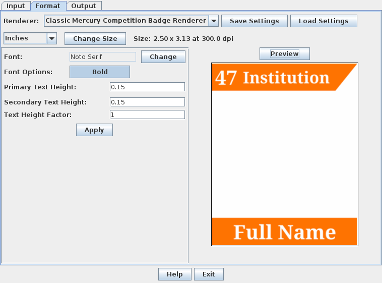
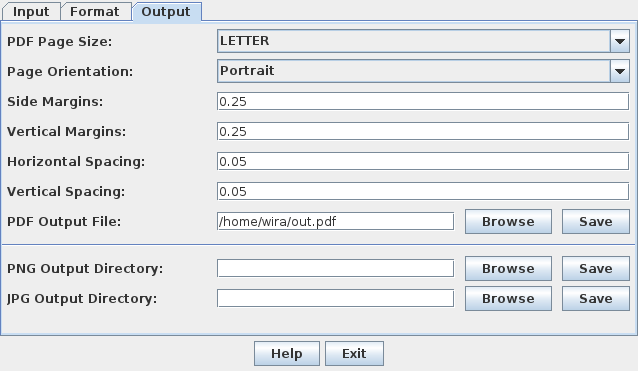

The next step after data input is to specify the format of the badge by using the Format tab:

The Classic Mercury Competition Badge Renderer must be selected. The badge size is specified by the controls on the second row. You can select the units, the width and height, and the image resolution of individual badges. The resolution is specified as the number of pixels per unit area (e.g. DPI or pixels/mm).
The badge then can be formatted by selecting the font to use, and the height of the text in proportion to the badge's height (primary for the name field, secondary for the institution field). After clicking Apply if a parameter is modified, click on Preview to see how the badge template will look like.
The program will automatically fit the text to the available area, decreasing the font size if necessary.
After the format for the badges is specified. Click on the output tab:

The program can output three different file formats for the badges:
In PDF Output, the program will fit as many badges as possible on a single page. You can specify the page size, orientation, margins, and spacing between the badges. Once done, enter the name of the file to output or click Browse to browse your computer and specify a file name, then click Save to generate the PDF file.
The following is an example PDF output from the program viewed by a PDF reader application:
The PNG and JPG Outputs will write a collection of PNG or JPG images in the specified directory. Multiple badges that share the same number and name will only have a single image output. The size of the images are calculated using the badge size and resolution specified in the Format tab.
The file names will be output as Number-Name.png/.jpg